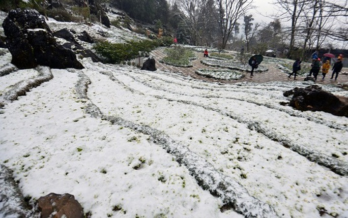
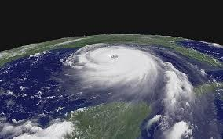
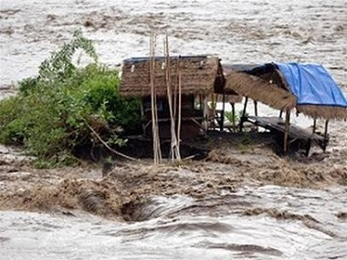
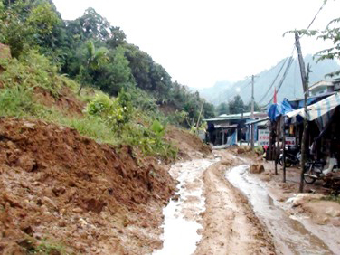
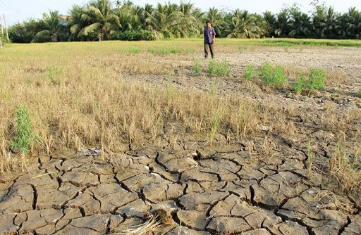

Mưa lớn là hiện tượng mưa với tổng lượng mưa đạt trên 50 mm trong 24 giờ, trong đó mưa với tổng lượng mưa từ 51 mm đến 100 mm trong 24 giờ là mưa to, mưa với tổng lượng mưa trên 100 mm trong 24 giờ là mưa rất to

-Nắng nóng là dạng thời tiết đặc biệt trong mùa hè, khi nhiệt độ không khí cao nhất trong ngày vượt quá 35 độ C và độ ẩm không khí xuống dưới 65%.-Rét hại là dạng thời tiết đặc biệt xảy ra trong mùa đông ở miền Bắc khi nhiệt độ không khí trung bình ngày xuống dưới 13 độ C

Bão là một xoáy thuận nhiệt đới có sức gió mạnh nhất từ cấp 8 trở lên và có thể có gió giật. Bão có sức gió mạnh nhất từ cấp 10 đến cấp 11 gọi là bão mạnh, từ cấp 12 đến cấp 15 gọi là bão rất mạnh, từ cấp 16 trở lên gọi là siêu bão

Lũ là hiện tượng mực nước sông dâng cao trong khoảng thời gian nhất định. Khi nước sông lên cao (do mưa lớn hoặc và triều cao), vượt qua khỏi bờ, chảy tràn vào các vùng trũng và gây ra ngập trên diện rộng

-Sạt lở đất là hiện tượng đất bị sạt, trượt, lở do tác động của mưa, lũ hoặc dòng chảy. -Sụt lún đất là hiện tượng đất bị tụt xuống thấp hơn so với khu vực xung quanh, do ảnh hưởng của mưa, lũ hoặc dòng chảy

Hạn hán là hiện tượng thiếu nước nghiêm trọng xảy ra trong thời gian dài do không có mưa và cạn kiệt nguồn nước